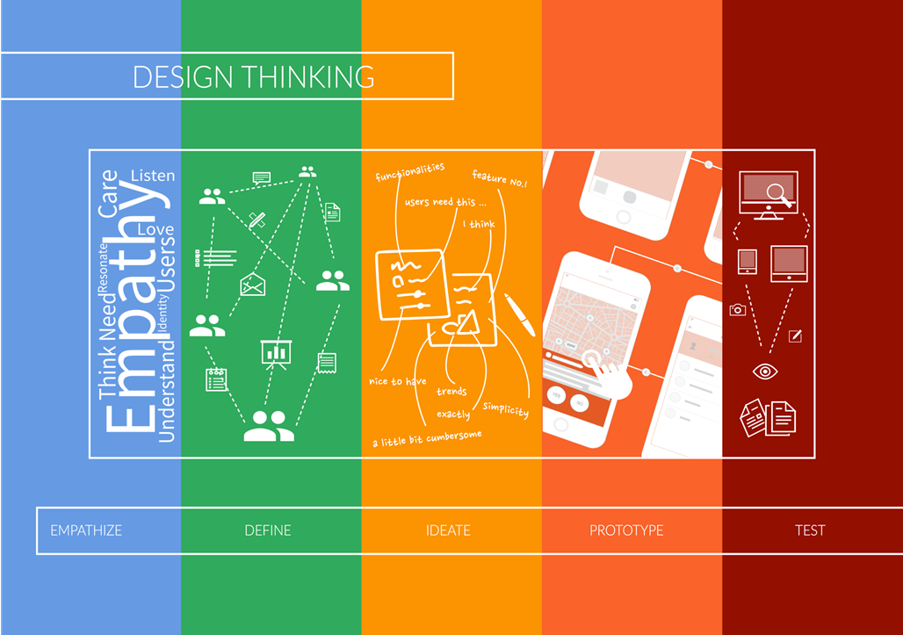

Design Thinking
Design Thinking é considerado a capacidade de combinar empatia em um contexto de um problema, de forma a colocar as pessoas no centro do desenvolvimento de um projeto, Criatividade para geração de soluções e razão para analisar e adaptar as soluções para um contexto de um problema que seja necessário inovação.
Por que inovar?
A cada dia que passa, mais empresas buscam novas maneiras de inovar.
Segundo a revista norte-americana Business Week, o processo de inovação consiste em recriar modelos de negócio e construir mercados inteiramente novos que vão ao encontro de necessidades humanas não atendidas, sobretudo para selecionar e executar as ideias certas, trazendo-as para o mercado em tempo recorde.
Tradicionalmente, inovar no meio empresarial significava buscar novas soluções tecnológicas. No entanto, nos anos 90 a disseminação do Total Quality Management – uma filosofia de gestão criada por Deming (1986) que visa o aprimoramento contínuo da qualidade de produtos e processos – fez nascer um novo caminho para a inovação: para inovar era preciso não apenas buscar novas soluções tecnológicas, mas também explorar novos mercados.Assim, além de criar novas formas de contato com o cliente, abriam-se também novos caminhos para satisfazer as necessidades destes. Com o passar do tempo, empresas passaram a perceber que já não bastava oferecer apenas superioridade tecnológica ou excelência em desempenho como vantagem mercadológica, pois tanto as companhias de pequeno porte quanto as de grande porte espalhadas pelo mundo já haviam começado a se adequar a esta realidade. No cenário de competição global que em breve se tornaria vigente, inovar seria uma tarefa árdua e muitas vezes frustrante. A dificuldade de obter diferenciação de mercado sobre a concorrência seria cada vez maior. Novos caminhos precisavam ser traçados, não apenas para garantir o êxito das empresas, mas, principalmente, sua sobrevivência.
Foi buscando novos caminhos para a inovação que se criou o que hoje é conhecido como “ Design Thinking”: uma abordagem focada no ser humano que vê na multidisciplinaridade, colaboração e tangibilização de pensamentos e processos, caminhos que levam a soluções inovadoras para negócios.
O pensamento abdutivo, ou melhor, o pensamento do designer
A principal tarefa é identificar problemas e gerar soluções. Os problemas que afetam o bem-estar das pessoas são de natureza diversa, e é preciso mapear a cultura, os contextos, as experiências pessoais e os processos na vida dos indivíduos para ganhar uma visão mais completa e assim melhor identificar as barreiras e gerar alternativas para transpô-las. Ao investir esforços nesse mapeamento, o designer (A alcunha de quem está participando do processo de Design Thinking) consegue identificar as causas e as consequências das dificuldades e ser mais assertivo na busca por soluções. O designer sabe que para identificar os reais problemas e solucioná-los de maneira mais efetiva, é preciso abordá-los sob diversas perspectivas e ângulos. Assim, prioriza o trabalho colaborativo entre equipes multidisciplinares, que trazem olhares diversificados e oferecem interpretações variadas sobre a questão e, assim, soluções inovadoras.
Isso faz com que o designer esteja sempre experimentando novos caminhos e aberto a novas alternativas: o erro gera aprendizados que o ajudam a traçar direções alternativas e identificar oportunidades para a inovação. No mais, como o nome já diz, o Design Thinking se refere à maneira do designer de pensar, que utiliza um tipo de raciocínio pouco convencional no meio empresarial, o pensamento abdutivo. Nesse tipo de pensamento, busca-se formular questionamentos através da apreensão ou compreensão dos fenômenos, ou seja, são formuladas perguntas a serem respondidas a partir das informações coletadas durante a observação do universo que permeia o problema. Assim, ao pensar de maneira abdutiva, a solução não é derivada do problema: ela se encaixa nele. Não se pode solucionar problemas com o mesmo tipo de pensamento que os criou: abduzir e desafiar as normas empresariais é a base do Design Thinking. É pensando de maneira abdutiva que o designer constantemente desafia seus padrões, fazendo e desfazendo conjecturas, e transformando-as em oportunidades. É essa habilidade, de se desvencilhar do pensamento lógico cartesiano, que faz com que o designer se mantenha “fora da caixa”.
Para guiar o processo de mapeamento do problema e geração da inovação foi definido o seguinte fluxo de processo:

Empatia ou imersão
Nesse momento a equipe de projeto aproxima-se do contexto do problema, tanto do ponto de vista da empresa quanto do usuário final.
É dividido em duas etapas:
1) Imersão preliminar
Tem como objetivo o reenquadramento e o entendimento inicial do problema.
Técnicas: reenquadramento, pesquisa exploratória e pesquisa desk.
2)Imersão em Profundidade
Destina-se à identificação de necessidades e oportunidades que irão nortear a geração de soluções, procura-se focar no ser humano com o objetivo de levantar informações de quatro tipos:
A) O que as Pessoas Falam ?
B) Como Agem?
C) O que pensam?
D) Como se sentem?
Técnicas: pesquisa exploratória e entrevistas.
Análise e síntese
Após as etapas de levantamento de dados da fase de imersão, os próximos passos são análise e síntese das informações coletadas. Para tal, os insights são organizados de maneira a obter-se padrões e a criar desafios que auxiliem na compreensão do problema.
Técnicas: cartão de insight e mapa conceitual.
Ideação
Essa fase tem como intuito gerar ideias inovadoras para o tema do projeto e, para isso, utilizam-se as ferramentas de síntese criadas na fase de análise para estimular a criatividade e gerar soluções que estejam de acordo com o contexto do assunto trabalhado.
Técnicas: brainstorming, workshop de cocriação, cardápio de ideias.
Prototipação
Tem como função auxiliar a validação das ideias geradas, é a tangibilização de uma ideia, a passagem do abstrato para o físico de forma a representar a realidade - mesmo que simplificada - e propiciar validações, pode ocorrer ao longo do projeto em paralelo com a imersão e a ideação.
Técnicas: encenação, storyboard, protótipo em papel.
Teste
Após a tagibilização da ideia é necessário testar o protótipo no ambiente do problema e verificar se realemnte está solucionando o que está propondo. Caso apresente falhas e/ou necessite de ajustes, levante os dados novamente e passe por todo o processo para criar um novo protótipo e testá-lo. Além de tudo, o Design Thinking é iterativo!
Pense abdutivamente, se aproxime do cliente e inove! O Design Thinking como método te proporciona esclarecimentos de como ser inovador na sua empresa!
Confira a palestra:
Comments
comments powered by Disqus